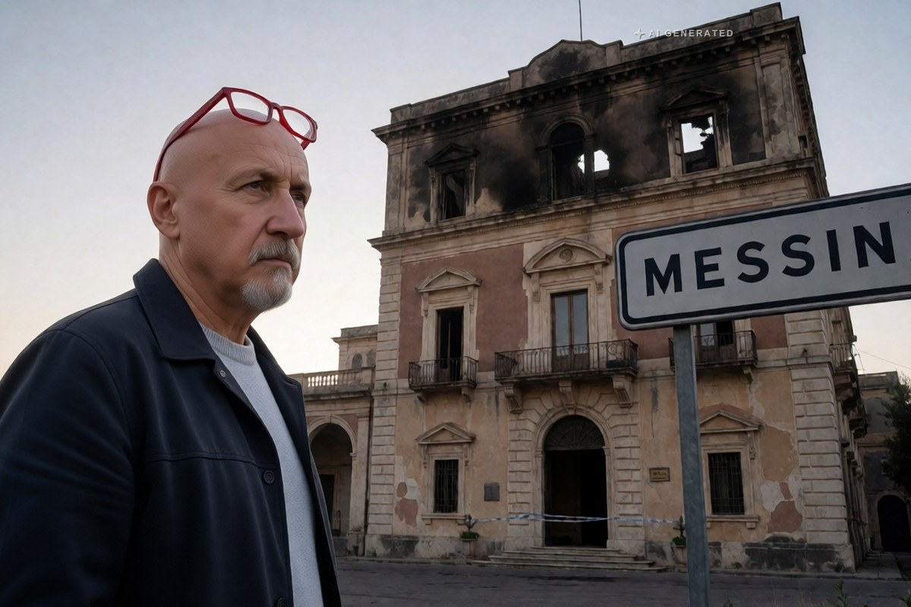

Cronaca · 7 novembre 2026
Incendio alla Camera di commercio di Messina, tre indagati

La Procura ipotizza il disastro colposo e l'omissione di cautele sul lavoro. Sotto sequestro l'intero palazzo di piazza Cavallotti, dopo le verifiche di stabilità. Nel mirino i lavori sul tetto e le misure antincendio.
di Franco Zanghì
Sono tre gli indagati per l'incendio che il 5 novembre 2026 ha devastato il tetto e il terzo piano dello storico palazzo della Camera di commercio di Messina, in piazza Cavallotti. L'iscrizione è stata disposta dal procuratore capo Antonio D'Amato con l'aggiunta Assunta Musella e la sostituta Roberta La Speme.
Gli indagati sono il titolare dell'impresa che eseguiva i lavori all'impianto di condizionamento del salone della Borsa, il direttore dei lavori e il responsabile della sicurezza della Camera di commercio. Le ipotesi di reato, contestate a vario titolo, sono disastro colposo e omissione di cautele contro gli infortuni sul lavoro. Secondo la Gazzetta del Sud, in questa fase si tratta di un atto dovuto. Per tutti vale la presunzione d'innocenza.
Il sequestro si allarga a tutto il palazzo
All'inizio i sigilli riguardavano soltanto la copertura e il terzo piano. Le verifiche sulla stabilità hanno poi portato alla chiusura dell'intero edificio, che resta sotto sequestro.
Il punto da chiarire: dove sono partite le fiamme
I lavori sull'impianto di condizionamento si svolgevano in un'altra ala del palazzo e, secondo Tempostretto, erano già conclusi a metà ottobre. Le fiamme invece sono partite dal sottotetto, sul lato di via Giordano Bruno.
Gli investigatori guardano anche a un secondo intervento: dopo le piogge il tetto presentava infiltrazioni e, secondo alcuni testimoni citati da LiveSicilia, quel giorno degli operai stavano posando una guaina con un cannello a gas. Resta sul tavolo anche l'ipotesi del cortocircuito. Secondo MessinaToday e la Gazzetta del Sud, nell'area del rogo gli estintori non risultavano in funzione.
L'esposto dei residenti sui soccorsi
L'avvocata Daniela Agnello, per conto di alcuni residenti, ha depositato in Procura foto e video sulle operazioni di spegnimento, parlando di mezzi inadeguati e dell'acqua dell'autoscala esaurita in poco tempo. Il comandante provinciale dei vigili del fuoco, Michele Burgio, ha replicato che l'acqua non è mancata e che si sono registrate soltanto anomalie su un'autoscala.
Le responsabilità penali le stabiliranno i giudici, e l'indagine è appena cominciata. Ma un palazzo pubblico che brucia per ore nel centro di una città non è una fatalità da archiviare: restano da capire chi ha autorizzato quei lavori sul tetto e con quali precauzioni, e quanti edifici pubblici messinesi abbiano davvero le misure antincendio in regola.
Fonti
- Giornale di Sicilia, «L'incendio alla Camera di Commercio di Messina: ci sono tre indagati», 7 novembre 2026
- MeridioNews, «Messina, tre indagati per l'incendio alla Camera di Commercio», 7 novembre 2026
- Sicilianews24, «Incendio alla Camera di Commercio di Messina, tre indagati: sotto esame i lavori e le misure antincendio», 7 novembre 2026
- Messinaindiretta, «Tre persone indagate: nel mirino lavori e sicurezza», 7 novembre 2026
- Quotidiano di Sicilia, «Incendio alla Camera di commercio di Messina, tre gli indagati», 7 novembre 2026
- Tempostretto, MessinaToday, Gazzetta del Sud e LiveSicilia, cronache del 6 e 7 novembre 2026 su lavori, estintori e testimonianze
Indagine nella fase iniziale: l'origine dell'incendio non è accertata e i nomi degli indagati non vengono pubblicati, perché sono indicati soltanto per il ruolo. Le fonti divergono sulla conclusione dei lavori all'impianto di condizionamento, collocata a metà ottobre da Tempostretto.